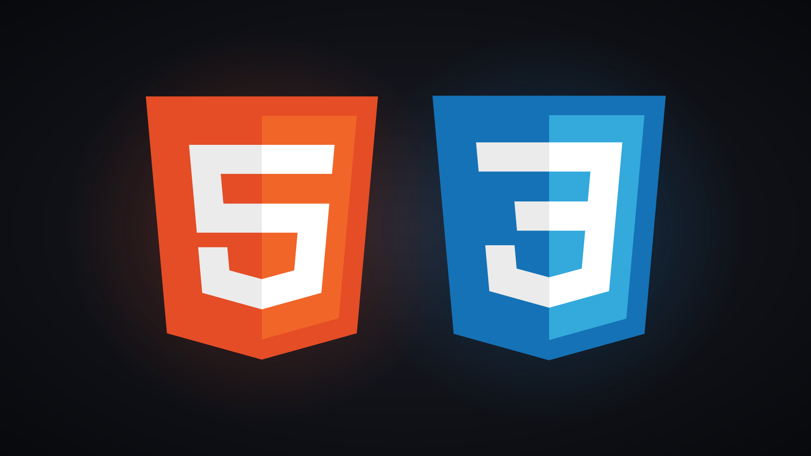
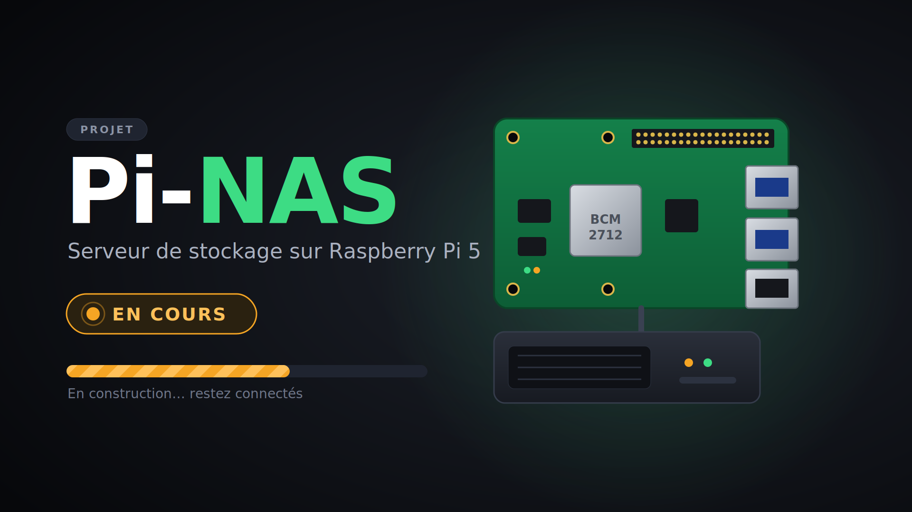

Décembre 2026
Dépannage informatique
Lycée Monnet-Mermoz, Aurillac
Dépannage informatique et installation de matériel.
Étudiant BTS SIO · Aurillac
Futur administrateur réseaux. Je découvre le développement web, les réseaux et la cybersécurité à travers des projets concrets.
À propos
J'ai 18 ans et je m'intéresse aux réseaux informatiques et à la cybersécurité. J'aime apprendre en expérimentant : monter un serveur ou câbler un réseau font partie de mes activités.
BTS SIO
Lycée Monnet-Mermoz
Aurillac (15)
Français · Anglais
Bac+5, puis administrateur ou architecte réseaux
Microsoft Azure AZ-900 et AZ-104
Parcours
Décembre 2026
Lycée Monnet-Mermoz, Aurillac
Dépannage informatique et installation de matériel.
Février – Avril 2026
Europe Service, Aurillac
Maintenance du parc informatique et assistance aux utilisateurs.
Juin 2024
Escotel, Aurillac
Mise en place de la fibre chez les particuliers.
Compétences
Projets
Console imprimée en 3D, propulsée par un Raspberry Pi 4 sous RetroPie.

Mon premier portfolio en HTML5 et CSS3, responsive.

Petit serveur NAS monté avec un Raspberry Pi 5 de 16 Go.
Contact
Disponible pour un stage ou une alternance.
Le dépannage demande de la méthode : comprendre le problème, chercher la cause, puis corriger sans rien casser. Je l'ai pratiqué en stage.
GLPI est un logiciel libre de gestion de parc informatique et de support. Il garde une trace de chaque incident et de chaque machine.
Déployer un serveur, c'est l'installer, le configurer et le rendre utile à d'autres machines du réseau, sous Linux comme sous Windows.
Git garde l'historique de toutes les modifications d'un projet. Avec GitLab, ce dépôt est hébergé en ligne et peut être partagé.
Un réseau local (LAN) relie les machines d'un même site : bureau, salle de classe ou maison.
Console de jeux portable rétro, conçue de A à Z avec un camarade pour un projet professionnel de lycée. J'ai pris en charge l'électronique et le système.
Mon premier portfolio, écrit à la main en HTML5 et CSS3.
Un petit serveur NAS, c'est-à-dire un espace de stockage accessible par le réseau, monté avec un Raspberry Pi 5 de 16 Go.